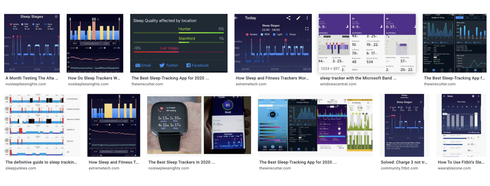
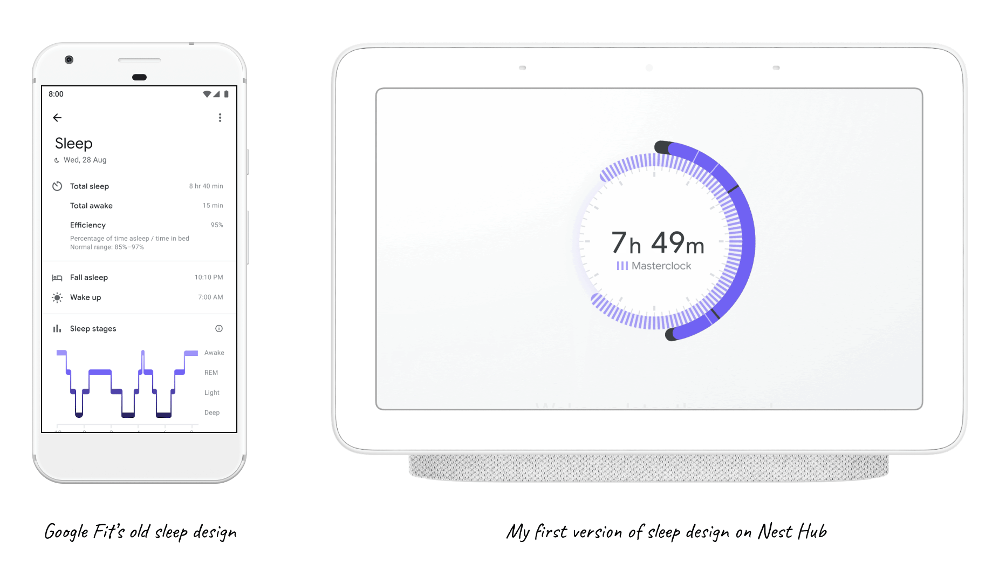

Google Nest Hub 2 with sleep sensing
Duration: Oct 2019 - Oct 2020 | Role: Lead product designer
Google Nest Hub 2 helps you understand your sleep and develop good sleep habbits by providing you sleep summary and personalized suggestions near your bedside. I Led design of sleep tracking and sleep coaching on the nest hub 2 while collaborating with teams from Google Fit, Google Home and Google Assistant. That means handling with: Design sprints, roadshows with 4 engineering teams, many executive reviews, rounds of user testing and iterations, coordinations with agencies...
01. Background
Teams at Google Nest Hub have been exploring ways to make their smart display more helpful. They know people already come to Google for information and tools to help them live healthier, happier lives, and they’ve specifically noticed more and more questions about sleep, exercise and health.
While my team at Google Health has been exploring ways to detect peopole’s sleep pattern using the latest Soli technology. In the early 2019, these two teams found each other and decided to bring the concept of sleep tracking and coaching to the second Nest Hub as they noticed a lot people already put their Nest Hub in the bedroom. When we look at the market today, there are lots limitations for sleep tracking and coaching. It's not accurate, not comfortable to track and quite complex to understand. 
02. How to measure sleep? Not duration!
To kick off the project, I first looked at all the sleep designs and research Google Fit has done for their app. I also mapped out all the potential moments users are likely to interact with this bedside device. According to their card-sorting user research, we know that users are very interested in the following information:
Based on my conversations with Sleep scientist Logan Schineider and readings on the book “Why we sleep”, I got to know that duration is not enough to measure a good night sleep. People will feel more rested when their sleep cycle matches their circadian rhythm. Also, Nest Hub has some other unique capabilities like accurately capturing when you went to bed and when you fell asleep and external environmental factors that disturbed your night.
Combining these three knowledge sources, I created the first version of sleep on Nest Hub and guided UXRers to validate the concept of masterclock. This concept of “masterclock alignment" resonates so well with users that it became the p0 feature of the product.
03. Redefine principles for a bedside device
04. Iterate based on principles and UXR